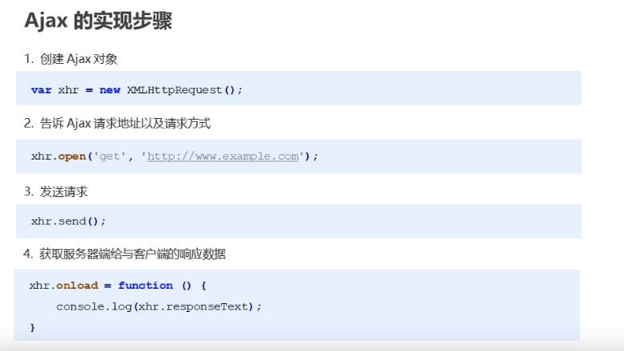
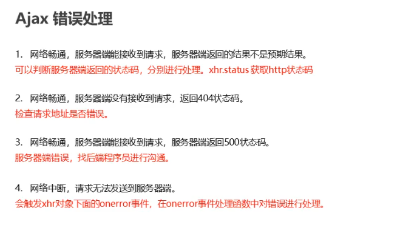
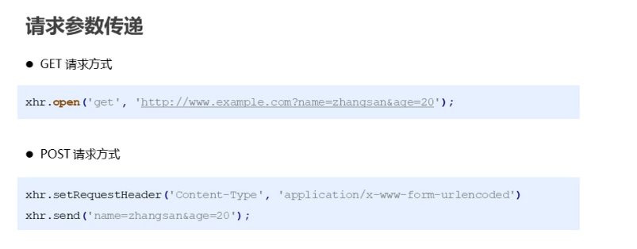
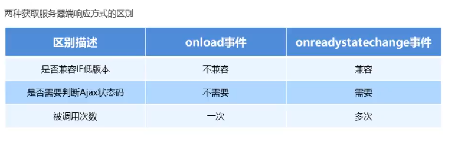
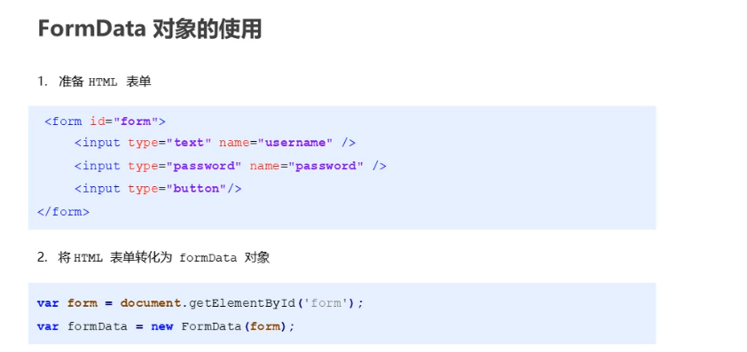
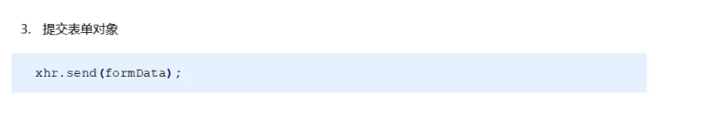
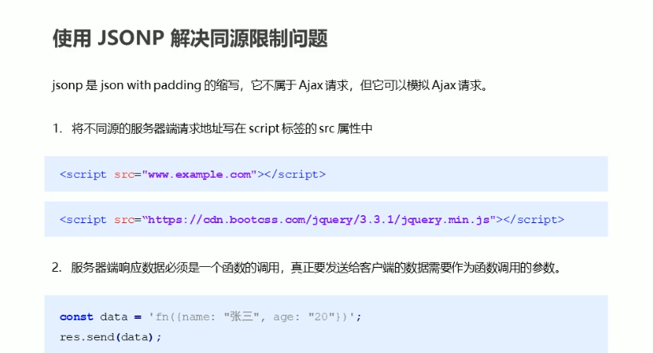
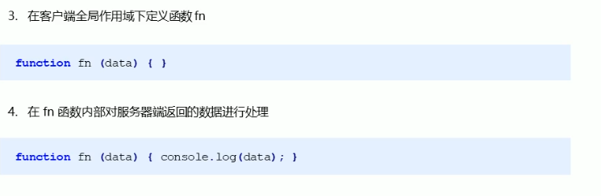

首先,浏览器与服务器之间,采用的是HTTP 协议通信。即用户可以在浏览器地址栏键入一个网址,或者通过网页表单向服务器提交内容,这时就表示浏览器向服务器发出了 HTTP 请求。
而在JavaScript中向服务器端发送HTTP请求的技术是AJAX(Asynchronous JavaScript and XML 的缩写),它是在2005年2月第一次正式提出的一种技术。
它可以实现向后端发起HTTP请求更新数据而不用刷新整个网页,提高了用户浏览网页的体验。
后来,AJAX 这个词就成为 JavaScript 脚本发起 HTTP 通信的代名词,也就是说,只要用js脚本发起http通信,就可以叫做 AJAX 通信。
而Ajax实现的关键技术是浏览器提供的 XMLHttpRequest 对象,至此浏览器原生提供了HTTP通信能力。
1.概述
Ajax通信实现的关键技术是 XMLHttpRequest 对象,W3C 也在2006年发布了它的国际标准 XMLHttpRequest Level 1。
也就是说发起 AJAX通信包括以下几个步骤(即js发起网络请求的步骤)
1.创建 XMLHttpRequest 实例
2.发出 HTTP 请求
3.接收服务器传回的数据
4.更新网页数据

注意:AJAX 只能向同源网址(通信协议、域名、端口都相同)发出 HTTP 请求,如果发出跨域请求,就会报错。这是由浏览器制定的同源策略决定的。
1.创建xhr对象
通过浏览器提供的原生 XMLHttpRequest对象 发出 HTTP 请求,得到服务器返回的数据后,再进行处理。
1.XMLHttpRequest本身是一个构造函数,使用new命令生成实例。它没有任何参数。
语法:
let xhr = new XMLHttpRequest();
2.准备和发送http请求
2.创建实例后,就可以使用open()方法指定建立 HTTP 连接的一些细节为发送请求做好准备。
语法:
xhr.open('GET', 'http://www.example.com/page.php', true);
接收3个参数:
参数一:请求类型get,上面代码指定请求使用 GET 方法。
参数二:请求URL,跟指定的服务器网址建立连接。
参数三:布尔值表示请求是否异步,true表示请求是异步的。
3.最后使用send()方法,实际发出ajax请求。
语法:
xhr.send(null);
接收一个参数,作为请求体发送的数据,如果不需要发送请求体,则必须传null。
如果发送的是 POST 请求,这里就需要传入指定数据体data即可。
3.监听ajax通信过程的状态处理返回数据
4.然后通过监听ajax通信过程的状态(readyState属性)的变化,指定回调函数处理返回数据。
语法:
xhr.onreadystatechange = handleStateChange;
//另一种
xhr.onload = handleStateChange;
4.添加http头部信息
每个HTTP请求和响应都会携带一些头部字段,xhr对象也对外暴露了相关的属性。
默认如下:
Accept:浏览器可以处理的内容类型
Accept-Charset:浏览器可以显示的编码字符集
Accept-Encoding:浏览器可以处理的压缩编码类型
Accept-Language:浏览器使用的语言
Connection:浏览器与服务器的连接类型
Cookie:页面中设置的cookie
Host:发送请求的页面所在的域名
Referer:发送请求的页面的URI
User-Agent:浏览器的用户代理字符串
Content-Type:浏览器发送数据的格式,非常常用。
这些字段都可以通过xhr的实例方法 setRequestHeader()设置,它接收两个参数:头部字段名和值。
同时为了保证请求头部被发送,需要在open()方法之后,send()方法之前调用setRequestHeader()方法。
即:
xhr.open();
xhr.setRequestHeader()
xhr.send(null)
可以通过 getResponseHeader()方法获取响应头信息。
2.xhr对象常用实例属性
1.readyState属性返回一个整数即ajax状态码:在ajax通信过程中每一步实例对象的当前状态都会对应一个数值即ajax状态码。
它表示当前实例对象请求进行到了哪一步即ajax请求的过程状态。
返回以下值:
0,表示 XMLHttpRequest 实例已经生成,但是实例的open()方法还没有被调用。
1,表示open()方法已经调用,但是实例的send()方法还没有调用,仍然可以使用实例的setRequestHeader()方法,设定 HTTP 请求的头信息。
2,表示实例的send()方法已经调用,并且服务器返回的头信息和状态码已经收到。
3,表示正在接收服务器传来的数据体(body 部分)。这时,如果实例的responseType属性等于text或者空字符串,responseText属性就会包含已经收到的部分信息。
4,表示服务器返回的数据已经完全接收,或者本次接收已经失败。即发出的HTTP请求已经完成,这是我们唯一关心的值
注意:通信过程中,每当实例对象发生状态变化,它的readyState属性的值就会改变。
而这个值每一次变化,都会触发readyStateChange事件。

2.response属性表示服务器返回的数据体(即 HTTP 回应的 body 部分)。它可能是任何数据类型,比如字符串、对象、二进制对象等等,具体的类型由XMLHttpRequest.responseType属性决定。该属性只读。
3.responseType属性是一个字符串,表示服务器返回数据的类型。这个属性是可写的,可以在调用open()方法之后、调用send()方法之前。
设置这个属性的值,告诉服务器返回指定类型的数据。如果responseType设为空字符串,就等同于默认值text。
可以取以下值:
""(空字符串):等同于text,表示服务器返回文本数据。
"document":Document 对象,表示服务器返回一个文档对象。
"json":JSON 对象。
"text":字符串。
4.responseText属性返回从服务器接收到的字符串,该属性为只读。只有 HTTP 请求完成接收以后,该属性才会包含完整的数据。
5.status属性返回一个整数, ajax错误处理表示服务器返回的 HTTP 状态码。
常见如下:
200, OK,访问正常
301, Moved Permanently,永久移动
302, Moved temporarily,暂时移动
304, Not Modified,未修改
307, Temporary Redirect,暂时重定向
401, Unauthorized,未授权
403, Forbidden,禁止访问
404, Not Found,未发现指定网址
500, Internal Server Error,服务器发生错误

对于低版本的ie浏览器ajax通信有严重的缓存问题,解决方法在请求地址上加上一个无关参数每次都不同即可。
如 + '?r=' + Math.random()
6.timeout超时属性,XMLHttpRequest Level 2规范增加。
7.withCredentials,属性是一个布尔值,表示跨域请求时,用户信息(比如 Cookie 和认证的 HTTP 头信息)是否会包含在请求之中。
默认为false,即向example.com发出跨域请求时,不会发送example.com设置在本机上的 Cookie(如果有的话)。
3.xhr对象常用实例方法
1.open()方法用于指定 HTTP 请求的参数,或者说初始化 XMLHttpRequest 实例对象。
它一共可以接受五个参数。
method:表示 HTTP 动词方法,比如GET、POST、PUT、DELETE、HEAD等。
url: 表示请求发送目标 URL。
async: 布尔值,表示请求是否为异步,默认为true。如果设为false,则send()方法只有等到收到服务器返回了结果,才会进行下一步操作。该参数可选。由于同步 AJAX 请求会造成浏览器失去响应,许多浏览器已经禁止在主线程使用,只允许 Worker 里面使用。所以,这个参数轻易不应该设为false。
user:表示用于认证的用户名,默认为空字符串。该参数可选。
password:表示用于认证的密码,默认为空字符串。该参数可选。
2.setRequestHeader()用于设置浏览器发送的 HTTP 请求的头信息。
如果是post请求必须设置,且必须在open()之后、send()之前调用。
如: xhr.setRequestHeader('Content-Type', 'application/json');
3.getResponseHeader()用来返回服务器端返回的 HTTP 头信息指定字段的值,没有为null
4.send()方法用于实际发出 HTTP 请求,它的参数是可选的。
如果不带参数,就表示 HTTP 请求只有一个 URL,没有数据体,典型例子就是 GET 请求.。
如果带有参数,就表示除了头信息,还带有包含具体数据的信息体,典型例子就是 POST 请求。
ajax请求参数的问题:
有时候希望传递一些数据给后端服务器就需要传参了,传递方式以及类型:get请求需要自己拼接在请求url后面,post请求使用send方法发送且必须设置请求头信息。

请求参数常见的格式:注意json格式必须使用JSON.stringify()转换。
语法:xhr.setRequestHeader('Content-Type','参数格式')

而现在服务器端响应一般是json数据,需要使用JSON.parse()转换为js对象。
4.xhr对象常见实例的事件属性
1.onreadystatechange = callback; 属性值是一个回调函数。
通过ajax对象的readyState属性可以获取ajax状态码,而当ajax状态码发生改变时就会触发 onreadystatechange事件。
readystatechange事件发生时,又会执行后面对应的回调函数。所以通过监听这个事件可以获取服务端的响应数据。
但是要注意:2,3,4状态码是在回调函数中触发的,在send方法前书写。
2.onload = callback; 在服务器端响应数据加载完成后触发load 事件(表示请求成功完成)就会执行后面对应的回调函数。
注意因为它是火狐浏览器最先提出的,所有有些浏览器是不支持这个事件属性的,其实主要是ie。
1和2方法比较:

3.onprogress:progress事件(正在发送和加载数据)的监听函数,在浏览器接收数据期间持续触发。
每次触发都会收到一个event对象,其target属性就是当前的xhr对象,还有position属性表示接收到的字节数,totalSize表示响应数据的总字节数。
通过这些消息,常常用来制作一个进度条。也是在open()方法前调用。
4.ontimeout:XMLHttpRequest Level 2规范增加的timeout事件
5.xhr封装
发送多次ajax请求时重复代码太多了,所以将ajax发送请求代码封装到一个函数中,参数在调用时传入。
这样在想发起ajax请求时调用函数就行了,会比较方便也便于复用。
封装也有两个版本一个是普通函数封装,另一个是promise封装。
分析:
ajax封装,给它传入一个对象,对象包含了type,url,success,属性。
分别表示ajax请求的方式,请求的地址,服务器端成功返回数据后的回调。
常见的两种请求:
get请求用于向服务器查询某些信息,必要时还要添加查询字符串放在请求地址后面。查询字符串必须经过正确的编码后再添加到URL后面,然后传给open()方法。
post请求用于向服务器发送应该保存的数据,在提交数据是可以模拟表单提交,通过设置Content-Type = "application/x-www-form-urlencoded",这是提交表单时使用的内容类型。
6.XMLHttpRequest Level 2规范
在xhr作为事实标准迅速流行起来时,W3C只能为此规范制定了正式标准,这也就是XMLHttpRequest Level 1它只是对已经存在的xhr对象实现细节再明确一下。
而XMLHttpRequest Level 2 则是进一步发展了xhr对象,浏览器都实现了的部分如下:
1.Formdata类型
之前发送post请求是,是通过设置内容类型来实现模拟发送表单数据,而在XMLHttpRequest Level 2里提供了Formdata类型用来创建与表单类似个数的数据。
当ajax需要传递很多参数给服务器端时,或者需要上传二进制文件时就需要formdata对象。
它是把HTML表单抽象成一个js对象,它会自动的拼接表单中的数据成请求参数的格式,即将表单数据以键值对的形式向服务器发送。
也可以用来异步上传二进制文件(图片,视频)给服务器端。

1.使用步骤
1. 定义一个HTML表单并给定id属性。
2. 将这个表单转化为formdata对象,使用浏览器提供的FormData对象,它是一个构造函数需要一个表单dom对象。
let formObj = document.getElementById('form-id');
let formdata = new FormData(form);
xhr.send(formdata);
3. 在ajax对象的send方法里传入这个表单实例对象,对应的HTML页面中的表单内容会自动拼接。
注意:这个表单不用设置请求地址方式提交按钮,表单项要有name属性,不能使用get请求


2.formdata 实例方法,在提交给服务器端时,可以操作。
formdata.get('key'),获取用户在表单控件属性名对应输入的值。
formdata.set('key','新设置的value'),没有这个属性添加,有会覆盖前面已有的。
formdata.delete('key') ,删除属性及对应的值。
formdata.append('key','新设置的value'),向表单项添加新的属性和值。
3.formdata 上传二进制文件
上传图片,音频,视频这种的,不能使用get方式。图片的实时显示
在用户选择上传文件时会触发 onchange 事件,
2.xhr对象timeout超时属性
这个规范给xhr对象添加了一个 timeout 属性,用来表示发送请求后等待多少毫秒,如果响应不成功就中断请求。
在超时时间过后没收到响应就会触发timeout事件,可以调用ontiimeout事件处理程序。
xhr.timeout = 1000; //设置1秒超时
xhr.ontiimeout = function (){
console.log('')
}
1.概述
1995年,由 Netscape 公司引入浏览器安全的基石 “同源政策”(same-origin policy)它是目前所有浏览器都实行的政策。
目的是为了保证用户信息的安全,防止恶意的网站窃取数据,所谓“同源”指的是“三个相同”,只要有一个不同就是跨域了。
协议相同、域名相同、端口相同。
如果是非同源即跨域了则以下三种行为受到限制。
1.无法读取非同源网页的 Cookie、LocalStorage 和 IndexedDB。
2.无法接触非同源网页的 DOM。
3.无法向非同源地址发送 AJAX 请求(可以发送,但浏览器会拒绝接受响应)。
举例来说,http://www.example.com/dir/page.html 这个网址,
协议是http://,
域名是www.example.com,
端口是80(默认端口可以省略),
它的同源情况如下:
http://www.example.com/dir2/other.html:同源
http://example.com/dir/other.html:不同源(域名不同)
http://v2.www.example.com/dir/other.html:不同源(域名不同)
http://www.example.com:81/dir/other.html:不同源(端口不同)
https://www.example.com/dir/page.html:不同源(协议不同)
2.跨域资源共享的方法
由于浏览器同源政策的规定AJAX 请求只能发给同源的网址,否则就报错。有3中方法规避这个限制进而实现跨域的Ajax通信。
1.JSONP
JSONP 是json with padding的缩写,它不是ajax请求,但是它可以模仿ajax请求进而实现跨域Ajax通信。
它是服务器与客户端跨源通信的常用方法, 是一种解决ajax通信无法跨域的方法。
它是通过动态创建script元素并为src属性指定跨域URL实现的。
最大特点就是简单易用,没有兼容性问题,老式浏览器全部支持,服务端改造非常小。
缺点是JSONP 只能发送GET请求,参数要拼接在url后面,需要前后端的配合。
步骤:
1.客户端使用script元素的src属性可以跨域的特点,写入向服务器请求的网址,这个网址后面有一个callback查询参数,用来告诉服务器,客户端要执行的回调函数名。
2.服务器收到请求后,拼接字符串,将要返回的 JSON 数据放在函数参数里,作为字符串返回,格式是函数的调用形式,需要返回的数据放到形参里。(bar({...}))。
3.客户端会将服务器返回的字符串,会直接作为代码解析,因为浏览器认为,这是script标签请求的脚本内容。
这时,客户端只要定义了1中定义的函数,就能在该函数体内,拿到服务器返回的数据。


例子:
http://freedf.net/json/?callback=handleResponse
回调:handleResponse()
封装jsonp在需要使用的时候直接调用函数即可,动态创建script标签,回调函数由前端决定。
2.CORS跨源资源共享
CORS 是跨源资源分享(Cross-Origin Resource Sharing)的缩写,它是 W3C 标准定义了浏览器和服务器如何实现跨域Ajax通信。
基本思路是使用自定义的HTTP头部允许浏览器和服务器互相了解,以确定请求或响应应该成功还是失败。
属于跨源 AJAX 通信的根本解决方法,而且CORS 允许任何类型的请求。
具体实现:
CORS 需要浏览器和服务器同时支持对于开发者来说,CORS 通信与普通的 AJAX 通信没有差别,代码完全一样。
浏览器一旦发现 AJAX 请求跨域,就会自动添加一些附加的头信息 Origin字段,有时还会多出一次附加的请求,但用户不会有感知。
实现 CORS 通信的关键是服务器,只要服务器实现了 CORS 接口,就可以跨域通信。
CORS是一种叫预检请求的服务器验证机制,允许使用自定义头部、除get和post之外的方法、以及不同请求体的内容类型。
在要发送简单请求时:
就自动在头信息之中,添加一个Origin字段。
服务器接收到请求后,查看Origin指定的源在不在许可范围内,在就返回一些响应信息。
Access-Control-Allow-Origin: http://api.bob.com,该字段是必须的。它的值要么是请求时Origin字段的值,要么是一个*,表示接受任意域名的请求。
Access-Control-Allow-Credentials: true 该字段可选。它的值是一个布尔值,表示是否允许发送 Cookie。
Access-Control-Allow-Methods 以及运行哪些HTTP请求方法(逗号分隔的列表)
Access-Control-Allow-Headers 服务器允许的头部信息
Content-Type: text/html; charset=utf-8
在要发送非简单请求时:非简单请求是那种对服务器提出特殊要求的请求,比如请求方法是PUT或DELETE,或者Content-Type字段的类型是application/json。
它会在正式通信之前,增加一次 HTTP 查询请求,称为“预检”请求(preflight)。
浏览器先询问服务器,当前网页所在的域名是否在服务器的许可名单之中,以及可以使用哪些 HTTP 方法和头信息字段。只有得到肯定答复,浏览器才会发出正式的XMLHttpRequest请求,否则就报错。
请求使用 options方法,
OPTIONS /cors HTTP/1.1
Origin: http://api.bob.com
Access-Control-Request-Method: PUT,列出浏览器的 CORS 请求会用到哪些 HTTP 方法
Access-Control-Request-Headers: X-Custom-Header,指定浏览器 CORS 请求会额外发送的头信息字段
Host: api.alice.com
Accept-Language: en-US
Connection: keep-alive
User-Agent: Mozilla/5.0...
服务器接收到后检查了Origin、Access-Control-Request-Method和Access-Control-Request-Headers字段以后,确认允许跨源请求,就可以做出回应。
HTTP/1.1 200 OK
Date: Mon, 01 Dec 2008 01:15:39 GMT
Server: Apache/2.0.61 (Unix)
Access-Control-Allow-Origin: http://api.bob.com,表示http://api.bob.com可以请求数据。该字段也可以设为星号,表示同意任意跨源请求。
Access-Control-Allow-Methods: GET, POST, PUT,表明服务器支持的所有跨域请求的方法。
Access-Control-Allow-Headers: X-Custom-Header,表明服务器支持的所有头信息字段,不限于浏览器在“预检”中请求的字段。
Content-Type: text/html; charset=utf-8
Content-Encoding: gzip
Content-Length: 0
Keep-Alive: timeout=2, max=100
Connection: Keep-Alive
如:express中添加自定义中间件设置哪些域可以访问。
1.设置哪些客户端可以访问,*表示所有都能跨域访问。
res.header('Access-Control-Access-Origin','允许的客户端地址')s
2.允许客户端使用哪些请求方法
res.header('Access-Control-Access-Methods','get,post')
当然现在更方便,直接使用第三方模块cors就行。
3.WebSocket
1.概述
Fetch API是WHATWG的标准规范,是 XMLHttpRequest 的升级版,也是用于在 JavaScript 脚本里面发出 HTTP 请求。
浏览器原生提供这个方法,它是暴露在全局作用域下的 fetch(),调用它浏览器就会向给定的URL发送HTTP请求。
本质就是用来替代XMLHttpRequest的。
fetch()的功能与 XMLHttpRequest 基本相同,但有三个主要的差异。
1.fetch()使用 Promise,不使用回调函数,因此大大简化了写法,写起来更简洁。
2.fetch()采用模块化设计,API 分散在多个对象上(Response 对象、Request 对象、Headers 对象),更合理一些。
相比之下,XMLHttpRequest 的 API 设计并不是很好,输入、输出、状态都在同一个接口管理,容易写出非常混乱的代码。
3.fetch()通过数据流(Stream 对象)处理数据,可以分块读取,有利于提高网站性能表现,减少内存占用,对于请求大文件或者网速慢的场景相当有用。
XMLHTTPRequest 对象不支持数据流,所有的数据必须放在缓存里,不支持分块读取,必须等待全部拿到后,再一次性吐出来。
2.基本用法
在用法上,fetch()接受一个 URL 字符串作为参数,默认向该网址发出 GET 请求,返回一个 Promise 对象。
它的基本用法如下:
fetch(url)
.then(...)
.catch(...)